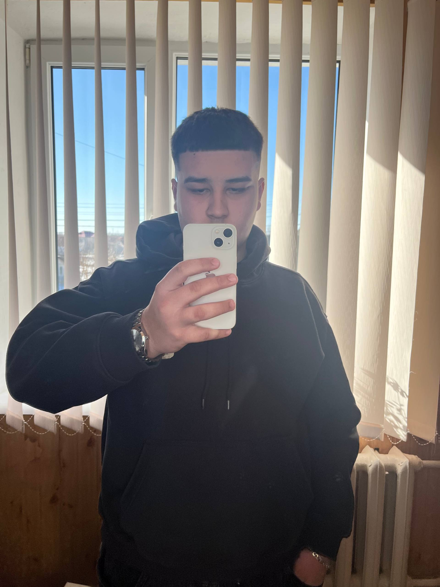

Specjalista ds. E-commerce (Własna działalność)
2024 - obecnie
Analiza rynku sprzętu elektronicznego oraz odzieży. Zarządzanie budżetem, optymalizacja kosztów zakupu i negocjacje z klientami. Skuteczne maksymalizowanie marży sprzedażowej.

E-mail: Mój email
Telefon: +42 434 654 435
Miasto: Warszawa
Jestem 17-letnim studentem informatyki na Uczelni Vistula. Rozwijam swoje umiejętności w programowaniu, szczególnie w C# oraz pracy z bazami danych (SQL). Ponadto interesuję się e-commercem oraz rynkiem cyfrowym. Zawsze szukam nowych możliwości do nauki i praktycznego wykorzystania wiedzy w realnych projektach.
2024 - obecnie
Analiza rynku sprzętu elektronicznego oraz odzieży. Zarządzanie budżetem, optymalizacja kosztów zakupu i negocjacje z klientami. Skuteczne maksymalizowanie marży sprzedażowej.
2023 - 2024
Tworzenie zautomatyzowanych anglojęzycznych kanałów wideo na rynek amerykański. Analiza algorytmów platformy oraz wykorzystanie narzędzi AI w procesie twórczym.
Uczelnia Vistula w Warszawie – Informatyka, 2025 - obecnie
Szkoła Podstawowa nr 2, Borszczów, 2014 - 2025